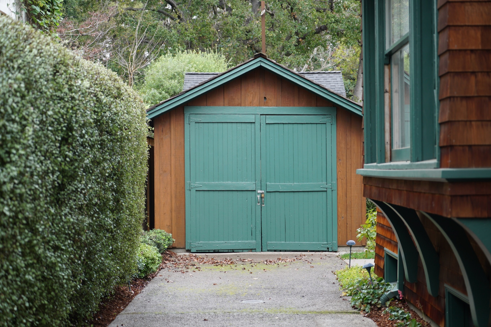
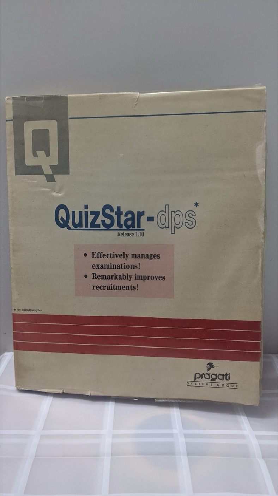
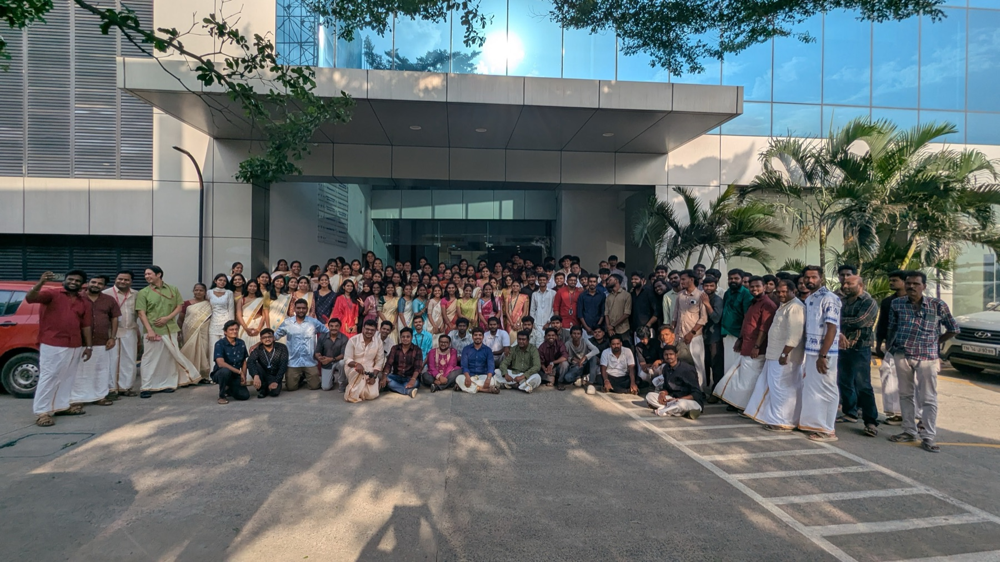
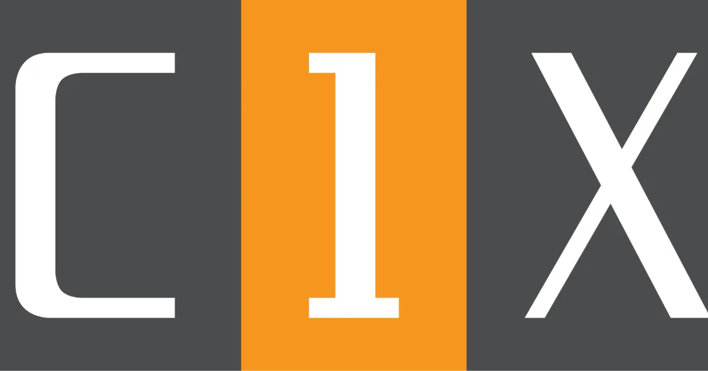

PRARAMBH · Deep Dive Workshop · SRM University AP · Day 2
Problem → Solution
…and the joy of building things people want, in 2026.
Raj Madhuram · Co-Founder & CTO, C1X · 30+ years of building software · ex-Yahoo!
Saturday, 29 August 2026
…and the joy of building things people want, in 2026.
Raj Madhuram · Co-Founder & CTO, C1X · 30+ years of building software · ex-Yahoo!
Saturday, 29 August 2026
 Photo: Frank Seger · Wikimedia Commons · CC BY-SA 3.0
Photo: Frank Seger · Wikimedia Commons · CC BY-SA 3.0
Z80 8-bit microprocessor · 32 KB RAM · 16 KB ROM · cassette tape for storage · TV for monitor
Type → run → it breaks → fix → run again. That loop is the addiction. Startups run the same loop: build, measure, learn.
32 KB forces you to decide what matters and drop the rest. Remember that number; it comes back later.
Building for yourself is fun. Watching someone else use what you built is better. That second joy is the whole startup game.
SNFS (care) · Green Genesis (agri) · Stellaris (fintech) · HappyHome (services) · NeuroNest (health) · DBD (freelancing) · Aven (fintech) · ELYON (security) · Chain of Trust (govtech) · ConfirmLink (transport) · Crop Pilots (agri) · BioByte (agri) · Cash (auto) · DocSathi (govtech) · Desi9 (fashion) · EventEz (events) · Astra (agri) · Med Rakshaks (pharma) · OMNI (productivity) · SRMPay (fintech) · Pepper AI (knowledge) · Dream It (agri) · Pet Orbit (pet care) · Genesis (travel) · Haven (kid-safe tech)
Ayush Plus (heart monitor + AI)
BHHARRAT (hydrogen) · Trinetra (saffron) · GREEN CYCLE (tyres) · AquaRescue (water) · ABHYUDAYA (textiles)
Hardware teams: booking, tracking, telemetry, dashboards — the software shows up around every physical product eventually.
Building great things · Innovation culture · Global impact
Circles drawn to scale. Market value and yearly output are different measures; the point is what a building culture compounds into: ten companies within 50 km of each other outweigh the output of 1.4 billion people.

367 Addison Avenue, Palo Alto. In 1939, Bill Hewlett and Dave Packard started HP here with $538. The official birthplace of Silicon Valley.
The HP Garage symbolizes humble beginnings, innovation, and entrepreneurial spirit. Four things it stands for:
Find a problem that matters and commit to solving it, regardless of your current scale.
Most groundbreaking ventures began with limited resources in unconventional spaces.
The journey of building is full of challenges and setbacks. Keep going anyway.
A space to experiment, dare to challenge conventions, and create.
None of these require money. All of them fit in a hostel room.
Programmer, essayist, co-founder of Y Combinator (2005): the startup school that funded Airbnb, Stripe, Dropbox, Reddit, and Coinbase at the "two people and an idea" stage.
Nobody has written more clearly about how startups actually begin. His essays are short, free, and at paulgraham.com. YC's motto is four words: "Make something people want."
How to Get Startup Ideas — why the best ideas are problems you have yourself
Do Things That Don't Scale — recruit your first users by hand
Schlep Blindness — the best ideas hide behind boring, painful work
How to Be Silicon Valley — what it takes for a place to become a startup hub
— Paul Graham, How to Get Startup Ideas (2012)

Started QuizStar, a quiz and self-development system, in Class XII. Launched it in my first year at GCT.
Hobby projects like Pcaisso, Fantasia, and T20 Visualizer live on my weekends today. The habit of building small things is what let me build the big things at work.
Find the assumption or component that could kill the project, and test it before polishing anything else.
Whatever you build, build it properly. Small scope, high quality, and a great UX. A polished small thing beats a sloppy big one.
It's the heart of your system. Get the entities and relationships right first; the code follows from it.
Especially when building as a team. Write down what it is, how to run it, and why you decided what you decided.
The best money a student builder can spend right now.
Open source, cheap hardware, and AI have collapsed the cost of trying an idea.
Libraries, frameworks, and tools for almost everything. Free. The hard parts are already built; you stand on them.
Arduino, ESP32, Raspberry Pi. A few hundred rupees buys a computer that senses and controls the physical world. Add 3D printing and drones, and you can prototype almost anything.
Claude Code, ChatGPT, Gemini. Code that took months now takes days. The cost of trying an idea has never been lower.
I built a 3D modeling platform from scratch, using principles from our Engineering Drawing class. Months of work. It won prizes at national-level contests.
I re-created it with Claude Code in a few hours. Same math, same principles. The AI typed; I steered with what I knew.
"All non-trivial abstractions, to some degree, are leaky." — Joel Spolsky, 2002.
AI is the biggest abstraction ever built over code. It will leak: generated code will break in ways only someone who understands the layer beneath can fix. That someone has to be you.
Knowing a little feels like knowing a lot. AI hands you the first 80% so fast that the peak of early confidence arrives on day one.
A Sprint and a Marathon. Both are true at the same time.
"Project Moneyball: An Oral History", Fast Company, 2015. A billion-dollar company at hackathon speed. If Yahoo did it with 18 people, your team of 4 can build a v1.
Three "random French dudes with no credentials" build an AI chatbot for teenagers. 100,000 daily users.
4 of 5 users never come back. They believe the churn, not the hype.
Thomas Wolf ports Google's BERT to PyTorch over a weekend. His tweet breaks the internet.
They kill the chatbot with 100K daily users and go all-in on open source.
3M models, 13M+ users, "the GitHub of AI". This Thursday: NVIDIA acquires Hugging Face for $12.9B.
100K daily users looked like success. 80% never returning was the truth. They believed the second number.
A weekend port got more genuine pull than two years of the main product. When the side project outruns the product, that's data.
Ten years, one brutal pivot, credentials optional. A startup doesn't have to be a sprint. You're 20; time is your unfair advantage.
"The best startups almost have to start as side projects."
Paul Graham, How to Get Startup Ideas. Thomas Wolf's weekend port is this sentence, worth $12.9 billion.
— Paul Graham
1 · Silicon Valley: great things start small. What is your garage?
2 · The joy of building: make it a habit. Look for problems you have yourself.
3 · Now is the best time: AI multiplies what you know. Build this weekend, not someday.
4 · Sprint or marathon: ship fast like Moneyball, stay honest and patient like Hugging Face.


We build a lot of cool things! San Francisco Bay Area · Chennai
Questions now, or grab me during the breaks.
Raj Madhuram
Co-Founder & CTO, C1X
linkedin.com/in/rmadhuram